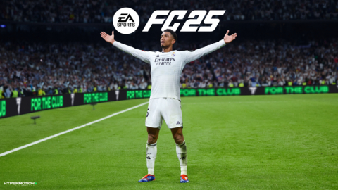
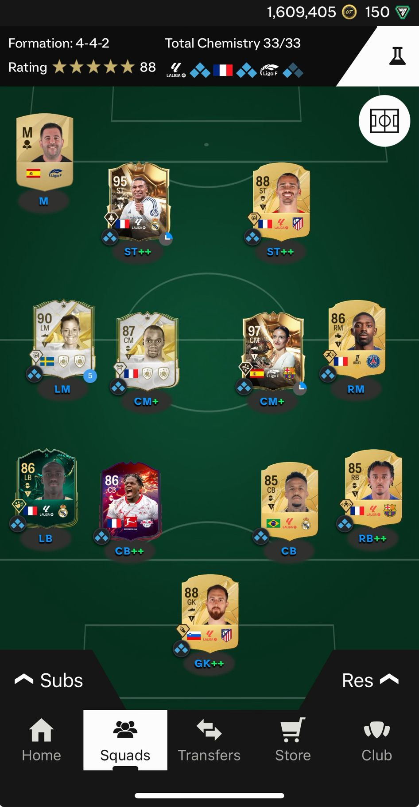
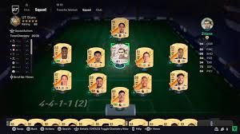
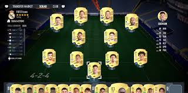
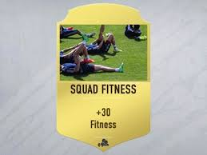

Personal Website - Dragne Antonio Gabriel
Biografie
Numele meu este Dragne Antonio Gabriel, am 20 de ani si sunt student in anul II la Facultatea de Automatica si Calculatoare din cadrul Univresitatii Nationale de Stiinta si Tehnologie Politehnica Bucuresti la sectia Ingineria Sistemelor, grupa 323AA.
Activitati in timpul liber
In timpul liber imi place sa joc fotbal, sa ma plimb cu masina sau sa ma joc jocuri video.
Fotbal:
Am jucat de la 14 ani pana la 18 ani pe postul de atacant central la echipa orasului meu, CSM Cetatea Turnu Magurele, echipa care in momentul de fata activeaza in liga a 3-a.
Echipa mea favorita este C.F Real Madrid, iar jucatorul meu preferat este Cristiano Ronaldo care acum joaca pentru cei de la Al-Nassr.
Jocuri video:
Jocul meu video preferat este EA FC 25 in care ai mai multe moduri de joc. Modul meu de joc preferat este Ultimate Team in care imi construiesc propria mea echipa in care pot sa pun aproape ce jucatori de fotbal vreau si sa ma joc impotriva altor jucatori pentru a putea urca in divizie. Pe scurt este un fel de simulator de fotbal.
Imagini din EAFC 25
Poza de coperta a jocului: 
Echipa mea: 
Află mai multe despre Chemistry în EA FC 25
Cum funcționează Chemistry-ul în EA FC 25
Chemistry-ul în EA FC 25 influențează performanța jucătorilor în echipa ta. Pozițiile corecte, naționalitățile similare și ligile în care joacă jucătorii contribuie la creșterea punctajului de Chemistry.
Fiecare jucător poate adăuga până la 3 puncte de Chemistry, iar scorul total al echipei poate varia în funcție de alinierea jucătorilor în formație. O echipă bine optimizată din punct de vedere al Chemistry-ului poate obține avantaje semnificative pe teren.
 Află mai multe despre Istoria Fitness-ului și a Pozițiilor Jucătorilor în FIFA
Istoria Fitness-ului și a Pozițiilor în FIFA
În FIFA, fitness-ul jucătorilor a fost un aspect esențial încă din primele jocuri. Inițial, jucătorii nu aveau un nivel de fitness determinat de joc, dar pe măsură ce jocul a evoluat, acest aspect a devenit mult mai important.
În FIFA 09, fitness-ul a fost introdus ca un factor care influența performanța jucătorilor, iar în FIFA 15, jucătorii care se aflau într-o formă slabă aveau un impact negativ asupra echipei. De-a lungul anilor, s-au adus îmbunătățiri în ceea ce privește recuperarea jucătorilor și gestionarea acestora pe parcursul sezonului.
În privința pozițiilor jucătorilor, FIFA a avut o abordare mai dinamică, permițând ca un jucător să fie plasat pe o poziție diferită, însă afectându-i performanța în funcție de rolul său natural. În jocurile mai recente, au fost adăugate noi roluri tactice, iar flexibilitatea în alinierea jucătorilor a devenit esențială pentru strategii.
